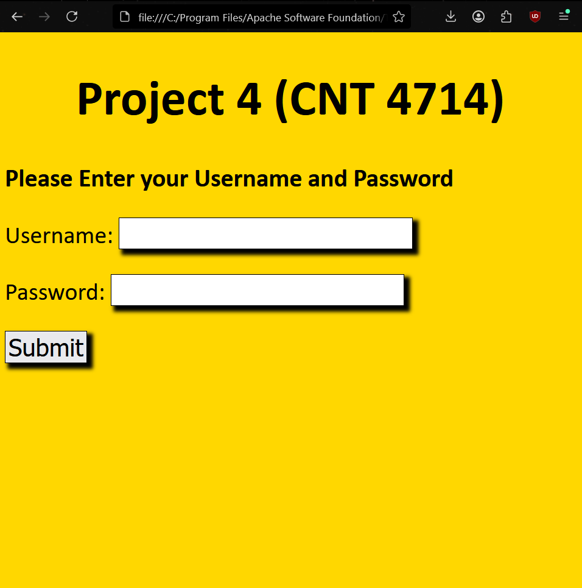
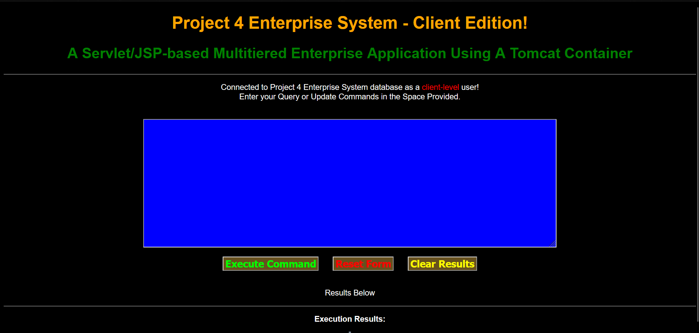
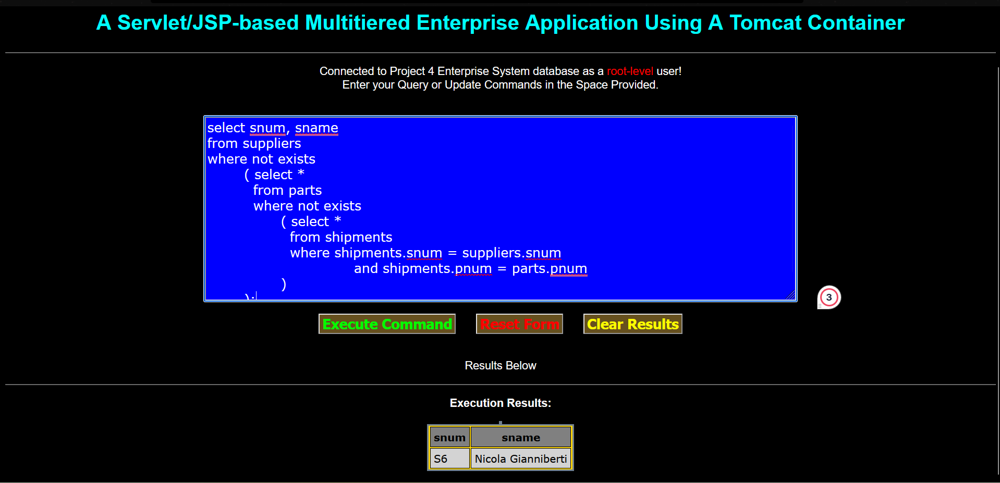
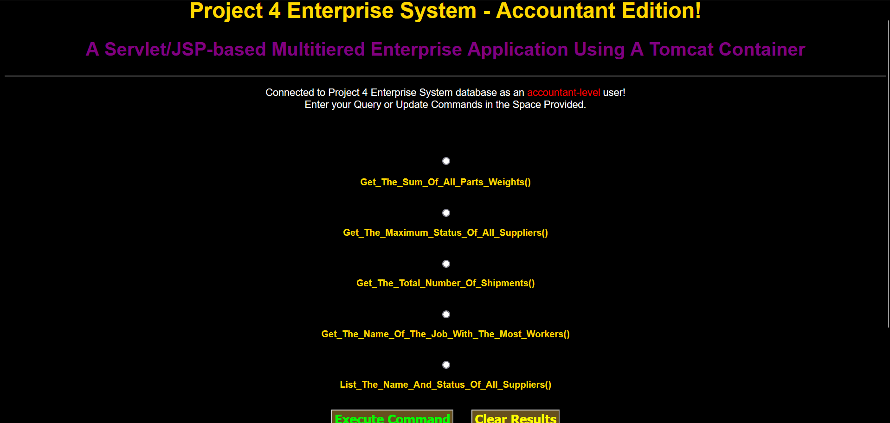

MySQL Query Website
Project Images
   Description
This was the final project for my "Database Concepts" course. This was by far the longest project I had done to date. The primary goal was to create a website where users could log in as either a client, accountant, or with root priveleges. Depending on the account a user logged in from, they would be greeted by a different page, that allowed different types of queries. Clients could only search through databases, accountants, would see a few options that would just execute specific queries without manual input. Users who logged in with root privelege could do anything they wanted with the databases as long as they knew the proper queires to input.
Skills Learned
This project was one of the first experiences I had when it came to creating a website and using MySQL. It was also the most intensive experience I've had to date when it came to both of them. I learned a lot about using .jsp, .html, and Apache Tomcat to create the website and connect it to properly take queries from a MySQL database.